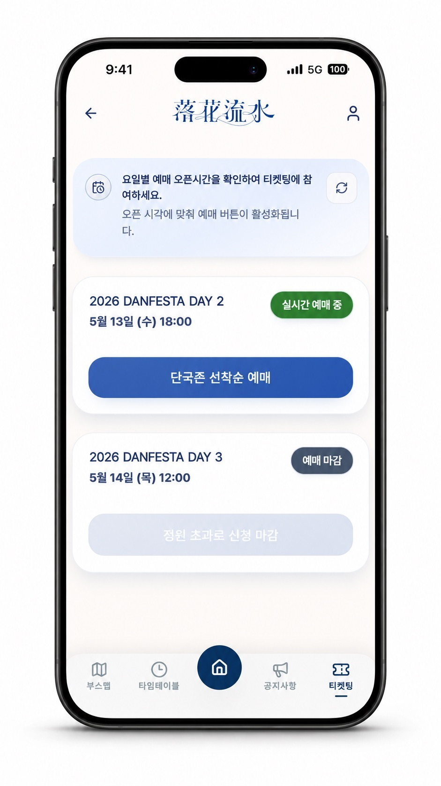
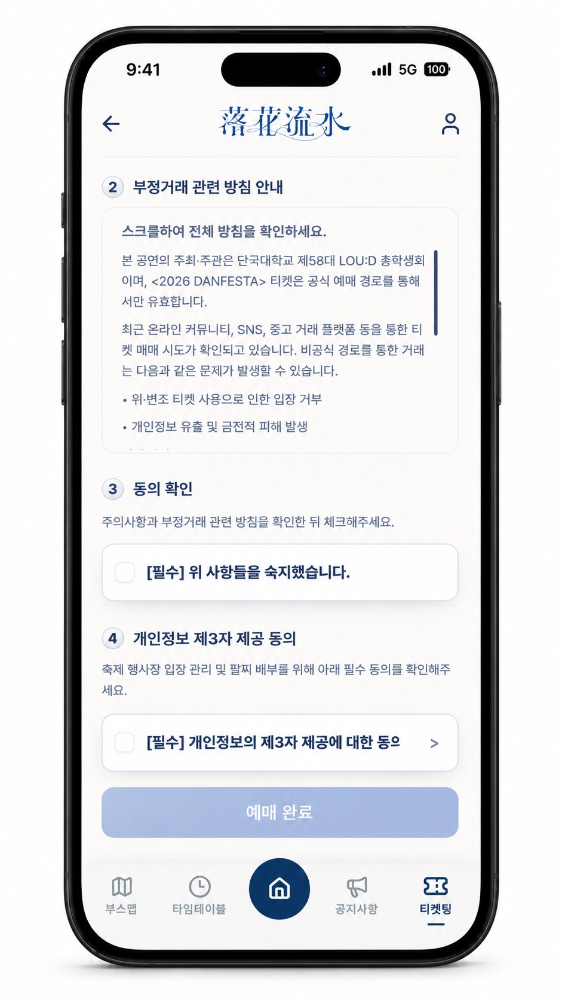

서비스 개발·운영
단짠
요구사항 조율부터 예매·입장 연계와 운영 개선까지
학생의 축제 정보 탐색·예매와 운영자의 입장 확인·팔찌 배부를 연결한 대학 축제 웹앱입니다. 사용자 흐름과 협력사 데이터 전달 기준을 구체화하고, 서비스 구현·검증과 현장 운영에 참여했습니다.
요구사항·가입 흐름 정리, 예매 API와 내 티켓·관리자 연동, 입장·발급 단계 보완, 운영 장애 복구 및 배포 후 확인에 참여
팀 통합 부하 테스트에서 10,000 VU 기준 재고·발급 3,400장, 중복 발급 0건, 발급 순번 갭 0건을 확인했습니다.
요구사항을 가입과 입장 흐름으로 연결
총학생회·학교·협력사와 요구사항을 조율하고, 팀과 학생의 가입·예매 흐름과 운영자의 입장·팔찌 배부 업무를 연결했습니다. AI 도구를 활용한 화면 구현과 사용자 검증에 참여했으며, 직접 현장 팔찌 배부를 맡아 실제 사용 흐름을 확인했습니다.
외부 얼굴인증 입장 연계를 위해 사용자 식별용 네이버 ID 수집과 예매 성공자 CSV 전달이 필요했습니다.
양일 예매자는 동일한 네이버 ID를 사용할 수 있지만 날짜별 입장 권한은 다를 수 있어, 협력사에 처리 기준과 전달 범위를 확인했습니다. 개발팀과 협력사는 전체 명단을 대조하는 방식에 합의했습니다.
- 네이버 ID 수집을 위해 가입 단계를 늘리는 안과 기존 3단계 마지막에 배치하는 안을 비교
- 입력 부담과 단계 수를 고려해 마지막 단계에 안내와 입력란을 배치
- React·TypeScript 화면과 필수 동의 판정 로직 수정
사용자 검증에서 확인한 가입 혼란 개선
서비스를 처음 사용하는 학생 대상 베타테스트에서 SMS 인증 방식의 혼란을 확인했습니다.
안내를 간결하게 수정하고 SMS 딥링크로 문자 앱을 연결했습니다. 안내 이후에도 네이버 이메일 주소 전체를 입력하는 경우가 있어, 정제 담당을 협력사와 별도로 합의했습니다.
- 필수 동의 여부를 고정 배열 인덱스가 아닌 required 속성과 체크 상태로 판정하도록 변경
- 네이버 이메일 형식 정제 방안을 제안하고 협의 후 네이버페이 담당으로 확정
번역 누락과 반복 호출 복구
영어 화면 일부가 한국어로 남고 신규 공지 자동 번역이 저장되지 않는 문제를 확인했습니다. Docker 로그와 MySQL 상태를 분석해 영문 컬럼 길이 초과로 저장이 롤백되고 같은 번역 요청이 반복되는 구조를 파악했습니다.
영문 컬럼을 확장하고 저장 트랜잭션을 행별로 분리한 뒤, 번역을 재개하고 공백 데이터를 정리했습니다.
- 미번역 데이터 0건 확인
- 신규 공지의 자동 번역·저장·영어 화면 표시 확인
- 번역 기능의 최초 구현은 팀원 작업이며, 장애 분석·수정·배포 후 확인에 참여
티켓 발급의 동시성 및 예외 검증
한정된 티켓에 요청이 몰리는 조건에서 재고 한도를 지키고 중복 발급을 막기 위해 Redis 대기열, Lua 원자 처리, Outbox와 Kafka 기반 발급 흐름을 구성했습니다.
비동기 발급 시 탈퇴 여부를 다시 확인하고 권리포기 티켓의 중복 예매와 관리자 지급을 막는 처리를 보완했습니다.
- 예매 API와 입장·발급 단계의 경계 정리
- Lua 원자 처리와 검증 코드 작성
- 부하 테스트 스크립트와 결과 집계 보완
서비스 화면


관련 자료